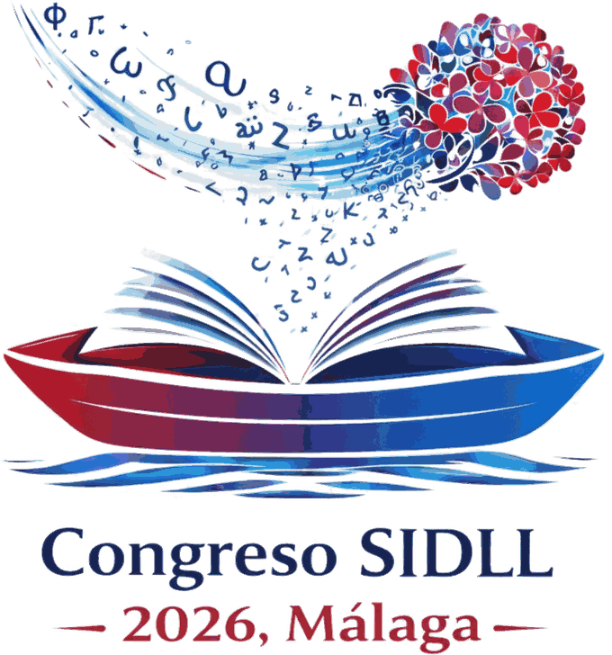

Programa oficial del congreso
Enseñanza de la lengua y la literatura en la era de la IA, la Interculturalidad y la Sostenibilidad Social
25–27 noviembre 2026 · Facultad de Ciencias de la Educación · Málaga
Programa actualizado